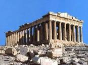
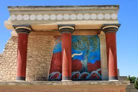

Афинский Акрополь

Акро́поль (др.-греч. ἀκρόπολις — верхний город) — возвышенная и укреплённая часть древнегреческого города, так
называемый верхний город. Акрополь — место первоначального поселения, вокруг которого развивался менее защищённый,
так называемый нижний город, населённый земледельцами. Являлся крепостью и служил убежищем для граждан в военное
время[1].
more
Храм Зевса Олимпийского
.jpg)
Олимпейо́н, храм Зевса Олимпийского (греч. Ναός του Ολυμπίου Διός) — самый большой храм Древней Греции, строившийся
с VI века до н. э. до II века н. э. Располагается в Афинах в 500 метрах к юго-востоку от Акрополя и около 700 метров
южнее площади Синтагма.
more
Кносс

Knossos (также Cnossos , оба произносятся / ( k ə ) ˈn ɒ s ɒ s , -s ə s / ; Древнегреческий : Κνωσός ,
латинизированный : Knōsós , произносится [knɔː.sós] ; Линейный B : 𐀒𐀜𐀰 Ko-no-so ; Линейное письмо А : 𐙂𐘝𐘲
Ку-ни-су ) [3] является крупнейшим археологическим памятником бронзового века на Крите .и был назван старейшим
городом Европы.
more